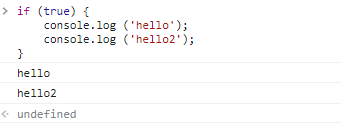

숫자열
* value : 값 -> data : 자료형
* String : 문자열
* \n : 줄바꿈표시
* == : ture 표시. 수학에서의 (=와 같음. 자스에선 2번이상 사용할 때가 있음.)
* 'how're you?' -> 감싸는거와 텍스트안에 들어갈 표시가 같으면 인식안됨. 그럴땐 감싸는걸 바꿔주기. "how're you?" or 'how\'re you?'
* 문자열을 합치려면 '사과' + '바나나' 이렇게 해야함. 띄어쓰기를 하고싶다면 바나나 앞에 띄어쓰기 해주기. 문자열+숫자열은 문자열이 돼버림.
* '사과' + ' 바나나'
* 숫자열은 그냥 쓰면 됨. 5,2,46451 ....
* 0을 많이 써야한다면 5e4 -> 50000 / 5e-4 -> 0.0005
* NaN 또한 숫자열임 'number'. 숫자가아니에요(not a number) 라는 뜻이지만 숫자열 맞음. 문자가 숫자인지 아닌지 궁금하면 typeof 써서 물어볼 수 있음
* Infinity : 무한대. 숫자열임.
* '123' + 4 -> '1234' / 123 + 4 -> 127 이 차이 주의. 문자열을 숫자열로 바꾸고 싶으면 Number('123') + 5 이렇게 or parseInt('123') + 5
* parseInt : 정수로 변경 / parseFloat : 소수로 변경
* prompt(); : 값을 받기 위해 알림창 띄움. 문자열로 받음.
* 연산자의 우선순위를 정하고 싶다면 ()를 사용할 것!
prompt는 사용자가 값을 입력할 수 있게 하고 / parseInt는 입력한 값을 숫자열로 바꾸고 (문자열로 받으니까) / typeof는 그 값의 자료형을 알려줌
더하기는 문자열이 아닌 것들이 문자열로 바뀌고 / 빼기,나누기,곱하기는 숫자열이 아닌 것들이 숫자열로 바뀜
* 소수점 계산 시 가장 간단한 방법은 실수를 정수로 바꿔서 계산한 뒤, 마지막에 다시 실수로 바꾸는 것.
ex) (0.3 * 10 - 0.1 * 10) / 10; => 0.2
불값
* typeof ture; -> bollean
* 참과 거짓은 논리식의 결과값으로 주로 사용된다. 예를 들어, 숫자를 비교할 때 결과값으로 불값이 나온다.
ex) 5 < 3; => false / 5 > 3; => ture
* <>는 수학에서처럼 비교를 의미한다.
* >= , <= 는 크거나 같다(이상), 작거나 같다(이하) 를 나타낼 때 사용한다.
ex) 5 >= 5; => ture / 5 <= 4; => false
* == 는 양쪽 값이 같은지 비교하는 연산자이고, != 는 양쪽 값이 다른지 비교하는 연산자이다.
ex) 5 != 5; => false / 4 != 5; => ture
* == 와 === 의 차이
ex) '1' == 1; => ture / 1 == 'ture'; => ture / 1 == '1'; => ture 처럼 == 는 자료형이 다른 경우에도 다 ture를 내보낸다.
그러나 === 를 사용하면 자료형끼리 같은지 다른지 알 수 있다.
ex) '1' === 1; => flase / 1 == 'ture'; => flase / 1 == '1'; => flase
!= 도 같이 !== 을 사용하여 비교하면 된다.
NaN끼리 비교하기
* 값 중에서 NaN끼리 비교할 때는 false 값을 가진다. 이는 숫자, 문자열, 불값을 통틀어 false가 나오는 유일한 값이다.
ex) NaN == NaN; => flase
단, != 연산자에서는 true값을 출력한다. 이 외의 비교는 모두 flase
* true > flase; => true 의 이유는 ture는 1. flase는 0을 의미하기 때문.
* 'b' > 'a'; => ture 의 이유는 b가 a보다 뒤에 나오기 때문.
논리연산자
* "10은 5보다 크고 (그리고), 6은 8보다 작다" 라는 문장이 있다. 이 문장은 10 > 5 와 6 < 8 처럼 나누어 나타낼 수 있는데, 여기서 "그리고" 를 표현해 주는 연산자가 바로 && 이다.
ex) 10 > 5 && 6 < 8; => ture / 혹은 (10 > 5) && (6 < 8); => ture. ture인 이유는 10 > 5 와 6 < 8 의 식이 모두 맞기 때문.
* 그리고 와는 다른 개념으로 "또는" 이 있다. 또는 은 || 연산자로 나타낸다.
ex) 10 < 5 || 6 < 8; => ture ture인 이유는 두 식 중 하나만 맞아도 ture로 나온다.
* 참을 거짓으로, 거짓을 참으로 만들어 주는 연산자도 있다. 앞에 ! 를 붙이면 참인 값은 false 가 되고, 거짓인 값은 ture 가 된다.
ex) !ture; => flase / !false => ture
ex) !!'a'; => ture ture인 이유는 ! 연산자를 연달아 두 번 썼기 때문이다.
처음 'a' 는 string로 문자열이다. 문자열인 참 값에서 ! 한번으로 거짓이 되고, 거짓인 값에서 또 한번 ! 으로 참이 된다.
ex) !!flase => flase / !!''(빈문자열) => false / !!0 => flase / !!NaN => flase 외는 거의 다 ture 값이 나온다.
* flase, ''(빈문자열), 0, NaN, undefined, null 은 불값으로 형 변환 시 flase가 된다.
이렇게 형 변환 후 false가 되는 값들을 거짓인 값(falsy value) 이라고 하고, ture 가 되는 값들은 참인 값(truthy value) 라고 한다.
ex) !(2 < 0); => ture 2는 0보다 작으니까 false -> ! 연산자 사용으로 바껴서 ture가 됨.
ex) !2 < 0; => flase 2는 ture인데 ! 연산자 사용으로 false가 됨.
ex) 5 + 4 * 3 === 27; 이 ture가 되게 만들어 보자.
==> (5 + 4) * 3 == 27; / !(5 + 4 * 3 ===27); / 5 + 4 * 3 !== 27; / 5 + 4 * 3 < 27; 등등 다양한 방법으로 ture로 만들 수 있다.
빈 값 사용하기 (undefined, null, object, symbol)
* undefined : 반환할 결과값이 없을 때 나온다. console.log 명령어는 콘솔에 무언가를 출력하지만, 그 자체로는 결과값이 없기 때문에 undefined 가 나온다. (자료형)
undefined는 불값으로 형 변환 시 flase 가 나온다.
* null : undefined와 같이 빈값을 의미하지만 같지 않다. typeof 할 때 object 가 뜬다. 이것은 초창기의 버그인데, null 값을 확인하기 위해서는 === null 을 사용해야 한다.
undefined == null; => ture / undefined === null; => flase 그 이유는 빈 값이라는 점에서는 같지만 자료형(형태)까지 비교해보면 다르기 때문이다.
null는 불값으로 형 변환 시 flase 가 나온다.
null 과 undefined 는 둘 다 빈 값이라 어떨 때 사용해야 하는지 헷갈릴 수 있다. undefined는 기본값이라는 의미가 있지만, null은 역할이 없다.
변수 선언하기(let)
프로그램을 만들 때 잠깐 동안 특정한 값을 저장해야 하는 상황이 발생한다. 이때 사용하는 것이 변수이다.
let 으로 시작하는 명령을 선언문 이라고 한다.
변수를 사용하면 다음과 같이 값을 저장할 수 있다.
let total = 5000 + 8000+ 10000+ 9000; => undefined 여기서 = 는 같다가 아니라 대입하다라는 뜻
변수를 선언할 때 영어,한글,한자,특수문자($ , _) 등으로 선언이 가능하다. 단, 첫글자가 숫자인 것은 안된다.
let 변수는 두 번 연달아 사용하면 에러가 뜬다.
ex)let empty; let empth; => 에러뜸
콘솔에서 새로고침하면 변수도 새로고침됨.
변수에 넣을 값을 비울 때도 잇다. 이때는 undefined 나 null 을 대입한다.
둘다 같은 값이지만 빈값을 넣을 때는 null 을 넣는 것이 좋다. undefined는 기본값의 역할도 하기 때문에 헷갈리기 때문.
ex)change = undefined; => undefined
ex)change = null; => null
자신을 자신에 대입할 수도 있다. 이처럼 = 는 같다가 아닌 대입하다 이기 때문이다.
위에 것을 밑에 처럼 줄일 수 있다. == , === 는 비교연산자 이고 = 는 대입연산자 이기 때문이다.
+= 처럼 /=(나누기) 나 *=(곱하기) -=(빼기) 도 가능하다.
변수는 계산된 값을 저장할 때도 사용하지만, 중복을 줄이기 위해서도 사용한다.
ex) console.log('긴 문자열');
ex) console.log('긴 문자열');
ex) console.log('긴 문자열');
이처럼 같은 문자열이 반복될 때, 변수를 사용하여 다음과 같이 바꿀 수 있다.
ex) let string1 = '긴 문자열';
console.log(string1); <= 즉 이부분은 '긴 문자열' 이라는 문장이다. 수정해야한다면 위에 let string1 의 '긴 문자열(이부분을 수정하면 된다)';
console.log(string1);
console.log(string1);
let이외에도 변수를 선언하는 예약어로 const 와 var 가 있다.
상수와 변수의 뜻을 살펴보면 완전히 반대 개념이란 것을 알 수 있다. (변수: 변하는 수 / 상수: 변하지 않는 수)
그런데도 let, const, var 를 묶어 변수라 칭하는 이유는 const는 따지고 보면 상수가 아니기 때문이다.
ex) let string1 = '긴 문자열'; -> string1 변수가 나중에 실수로 수정되는 것을 막기 위해 (let은 변수니까 수정 가능), const로 바꿔줄 수 있다.
ex) const string1 = '긴 문자열';
바꾸려고 하면 이렇게 에러가 난다.
마지막으로 var 를 사용해 변수를 선언하는 방법이 있다. 과거엔 많이 사용했지만 요새는 let 과 const 를 사용해 변수를 선언하는 방식을 선호한다.
단 var는 let과 다르게 연달아 사용해도 에러가 뜨지 않는다.
1분퀴즈) a와 b라는 변수에 어떤 값이 들어있다. 두 변수의 값을 서로 바꿔보자.
OR
조건문
조건문은 주어진 조건에 따라 코드를 실행하거나 실행하지 않는 문이다.
ex) if (조건식)
(동작문); => 이게 기본 형식
조선문은 조선식과 동작문으로 구분된다. 조건식이 참이면 동작문이 실행되고, 거짓이면 실행되지 않는다.
ex) if (조건식) {
(동작문1);
(동작문2);
(동작문3);
} => 다중 조건문 형식
조건문은 조건식에 직접적으로 true / false 를 넣기 보다는
이처럼 변수를 넣어 활용한다.
 다중 조건문 형식
else 를 사용하여 두 방향으로 나눌 수 있다.
ex) if (조건식) { <- 조건식이 참일 때 실행
동작문;
} else { <- 조건식이 거짓일 때 실행
동작문;
}
이렇게 변수를 선언하여 사용할 수 있다.
else if 문은 if 문 뒤에 else if 문을 적고, 그 뒤에 else if 문에 해당하는 조건식과 동작문을 추가한다.
ex) if (조건식) {
동작문;
} else if (조건식) {
동작문;
} else {
동작문;
}